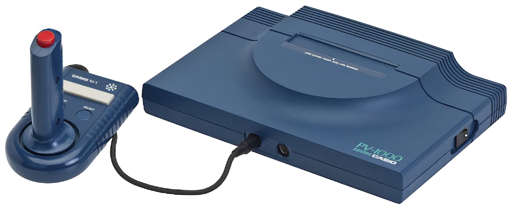
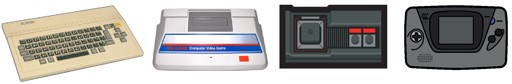
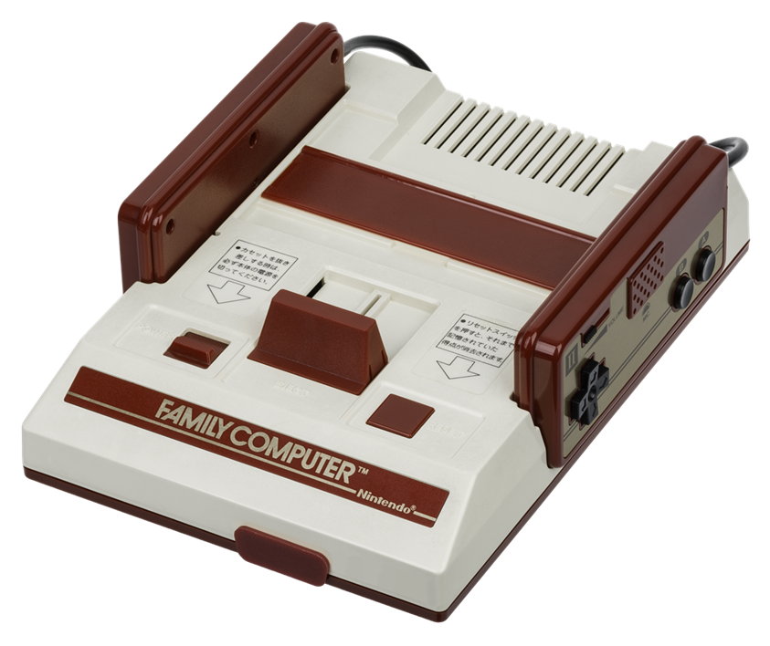

Super Othello

A simple othello player made for
an University project. The original version
provided also an online mode with a simple
matchmaking system based on mySQL and PHP.
Zx Spectrum 48k

An emulator for the famous Speccy!
It is possible to load .tap and .z80
programs.
Pacman Arcade

An emulator for pacman cabinet and some of
its clone! Main board consists of:
- Z80 Cpu
- Namco Wave Sound Generator
- Tile based background
- Hardware sprites
Space Invaders

An emulator of the Midway 8080 Cabinet. At the moment
only Space Invaders is supported. Main board consists of:
- Intel 8080 Cpu
- Bitmap black and white display
- A couple of fixed sound
エミュボーイ

A simple GameBoy/Gameboy Color/Megaduck emulator.
This project is not finished but it can emulate almost all games.
- Accurate interrupt emulation
- Cycle accurate cpu core
- Basic support of link cable via LAN
- support for .sav files
-
A large variety of MBCs supported
- MBC1
- MBC2
- MBC3
- MBC5 + Rumble
- MBC7
- MMM01
- M161
- MBC1M
- Gameboy Camera
- Megaduck MBCs
エミュボーイ GX

A work in progress GBA emulator. Audio is not fully implemented and
all the emulator is not optimized.
- ARM7TDMI interpreter
- Full Sound System is implemented
- Eeprom, Sram and Flash memory supported
- Internal database to detect save type
PV-1000 Emulator

A simple Casio PV-1000 Emulator that runs all the 13 released games.
The console is very simple and it is made of:
- Z80 working on IM 1
- A VDP capable of 8x8 tiles
- A PSG capable of 3 square waves with adjustable frequency
- 8/16 Kb Cartridges
TMS80

A multi system emulator that emulates consoles and computers with a Z80
and a TMS9918 VDP. The supported systems are:
- Sega Master System
- Sega Game Gear
- Sega SG-1000
- Sega SC-3000
ファミくん

A simple Famicom/NES (NTSC only) emulator that supports a few mappers.
- Zapper supported
-
Click here to see the supported mappers
- Mapper 0
- Mapper 1
- Mapper 2
- Mapper 3
- Mapper 4
- Mapper 7
- Mapper 9
- Mapper 66
- Mapper 71
- Mapper 87